鲸鱼 · 婴儿
摇篮漂浮移入卡片中的宠物播放，移开立即恢复静态。复用高清 PNG，通过位移、旋转和伸缩合成动作。
鲸鱼 · 婴儿
摇篮漂浮鲸鱼 · 幼儿
轻轻扑腾鲸鱼 · 少儿
跃出水面鲸鱼 · 青年
侧身冲浪鲸鱼 · 壮年
悠游致意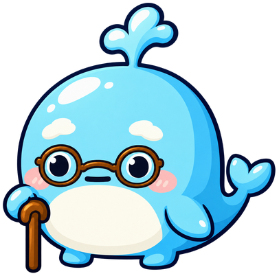
鲸鱼 · 老年
缓缓点头猴子 · 婴儿
害羞摇摆猴子 · 幼儿
蹦蹦学步猴子 · 少儿
左右蹦跳猴子 · 青年
腾跃欢呼猴子 · 壮年
俏皮探身猴子 · 老年
慢慢招呼鸭子 · 婴儿
软软晃动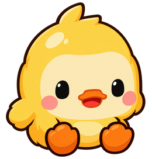
鸭子 · 幼儿
摇摆学步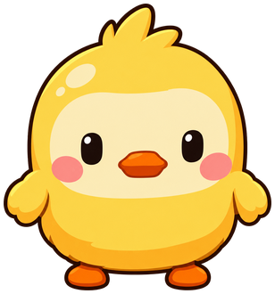
鸭子 · 少儿
扑腾小跳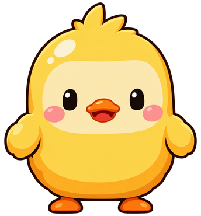
鸭子 · 青年
昂首踏步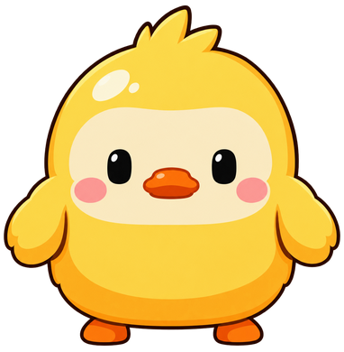
鸭子 · 壮年
鞠躬问好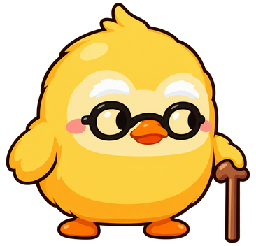
鸭子 · 老年
悠闲摇摆小鸡 · 婴儿
绒球轻颤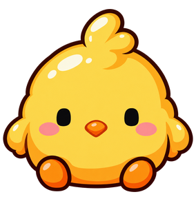
小鸡 · 幼儿
啄啄小跳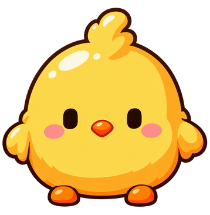
小鸡 · 少儿
连续弹跳小鸡 · 青年
挺胸扑腾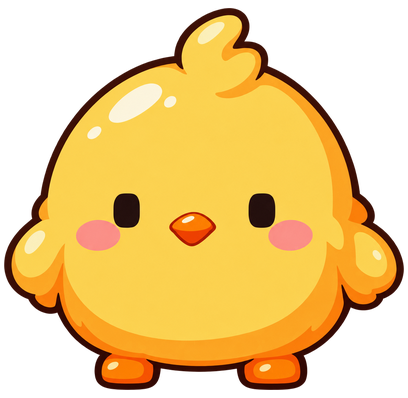
小鸡 · 壮年
低头啄啄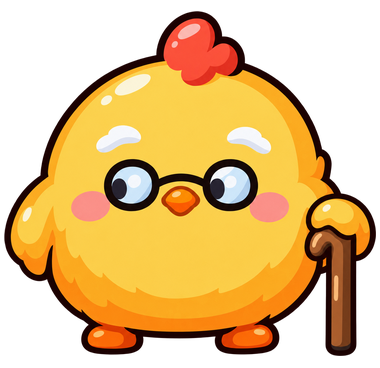
小鸡 · 老年
轻轻颔首猫猫 · 婴儿
蜷身轻晃猫猫 · 幼儿
歪头探看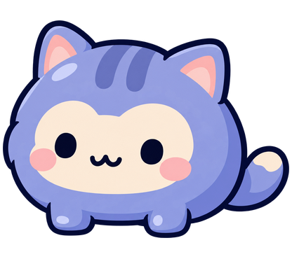
猫猫 · 少儿
蓄力扑跳猫猫 · 青年
舒展跃起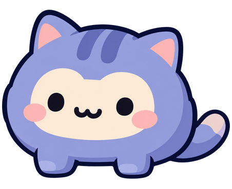
猫猫 · 壮年
伸懒腰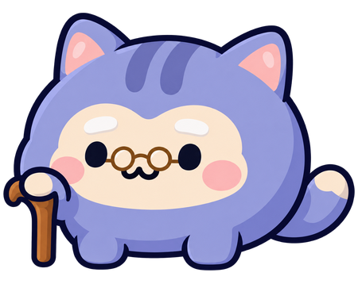
猫猫 · 老年
慢慢蹭蹭狗狗 · 婴儿
奶团摇摇狗狗 · 幼儿
开心颠步狗狗 · 少儿
欢快蹦跳狗狗 · 青年
前倾邀玩狗狗 · 壮年
俯身问候狗狗 · 老年
温柔点头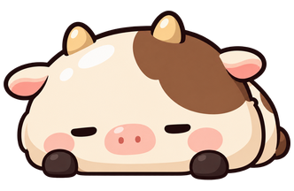
牛牛 · 婴儿
团团轻摆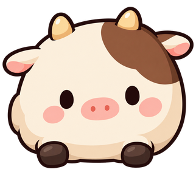
牛牛 · 幼儿
踏踏学步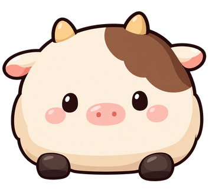
牛牛 · 少儿
笨拙小跃牛牛 · 青年
欢快踏步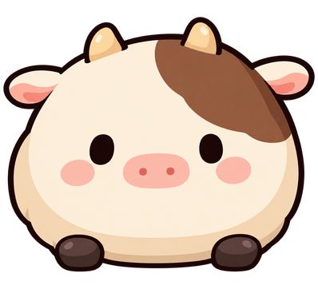
牛牛 · 壮年
沉稳点头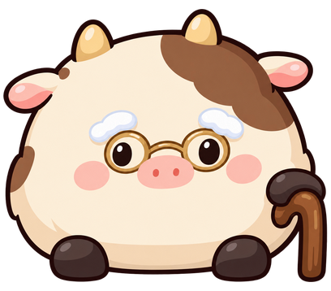
牛牛 · 老年
缓缓致意山羊 · 婴儿
毛团摇摇山羊 · 幼儿
试探踮脚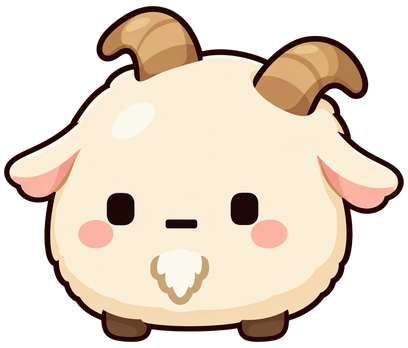
山羊 · 少儿
山坡蹦跳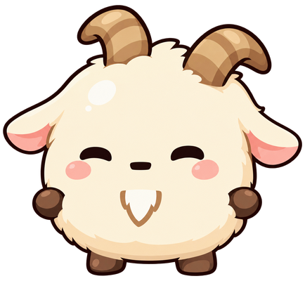
山羊 · 青年
轻巧跃起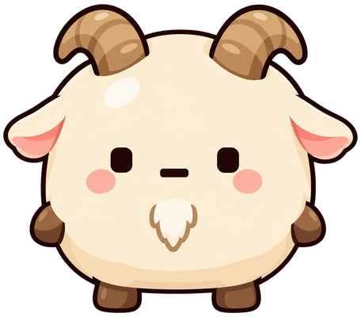
山羊 · 壮年
昂头致意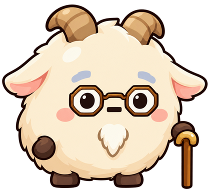
山羊 · 老年
低头慢摇恐龙 · 婴儿
抱抱摇摆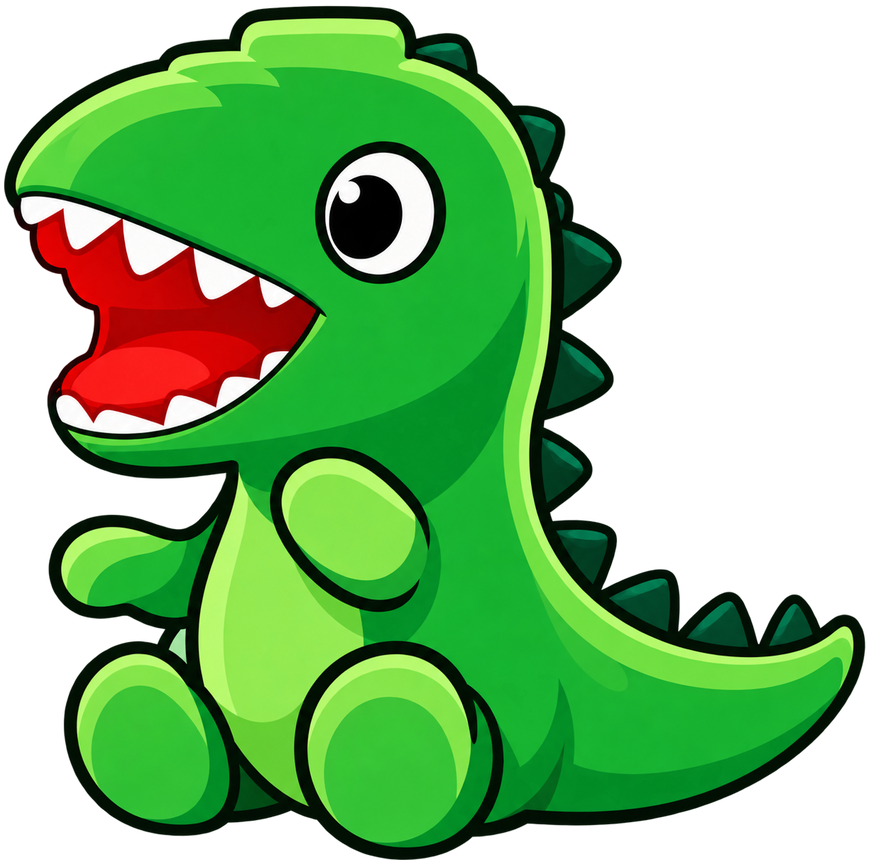
恐龙 · 幼儿
短腿踏步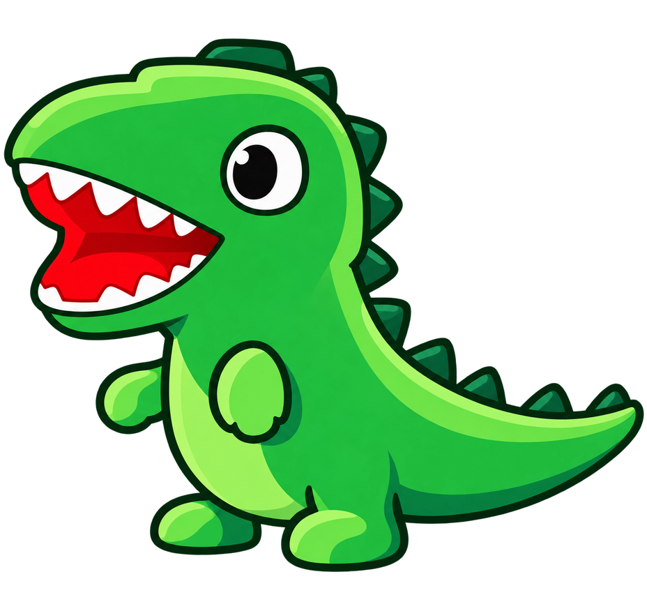
恐龙 · 少儿
开心蹦跶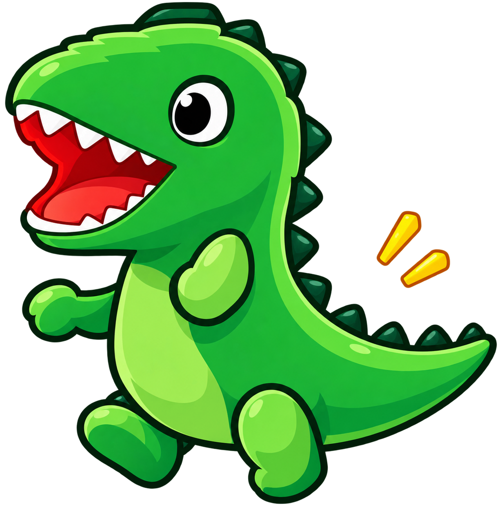
恐龙 · 青年
昂首小吼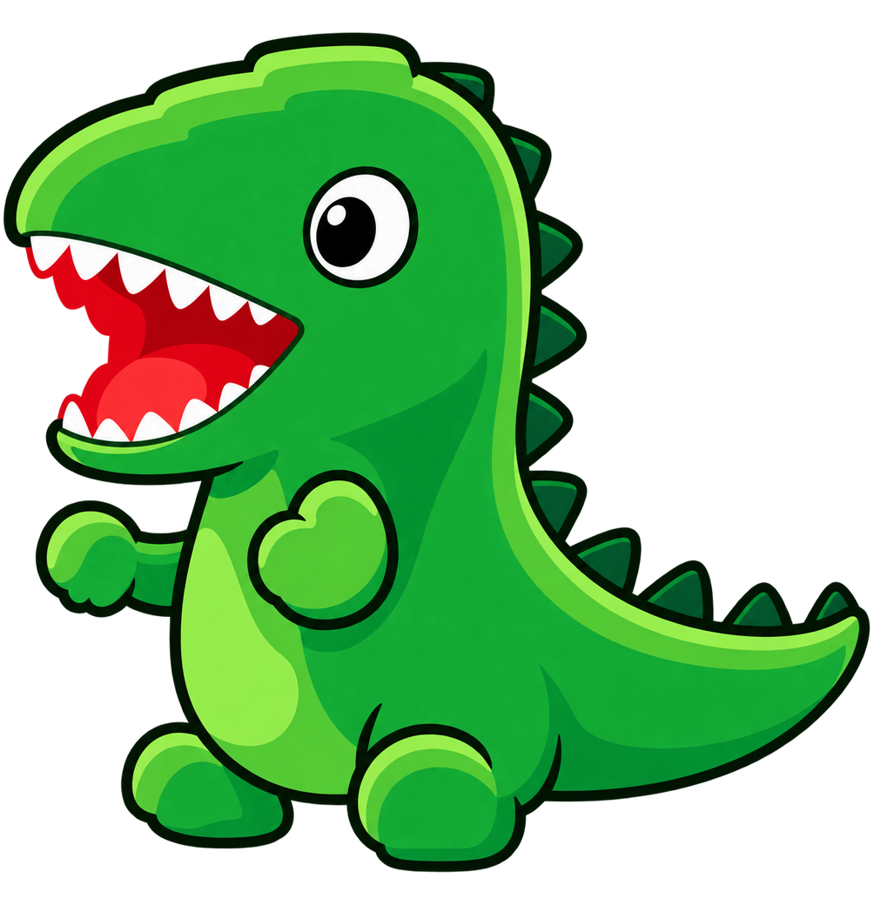
恐龙 · 壮年
探头招呼恐龙 · 老年
拄杖点头